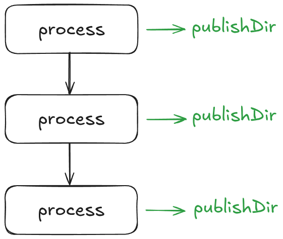

Inputs and Channels
Learning objectives
- Describe Nextflow channel types
- Utilise Nextflow process input blocks
- Use channels to run multiple inputs through a process
So far, you've been emitting a greeting ('Hello World!') that has been hardcoded into the script block. In a more realistic situation, you might want to pass a variable input to your script, much like you pass files to command line tools for analysis.
Here you're going to to add some flexibility by introducing channels to your workflow and an input definition to your SAYHELLO process.
Channels
In Nextflow, processes primarily communicate through channels. Channels are essentially the 'pipes' of our pipeline, providing a way for data to flow between our processes and defining the overall structure of the workflow.
Channels allow us to handle inputs efficiently by defining which data should be taken from one step to another. Channels are one of Nextflows key features that allow us to run jobs in parallel amongst many additional benefits.
There are two kinds of channels: queue channels and value channels.
Queue channels
Queue channels are the more common type of channel. It holds a series, or queue, of values and passes them into a process one at a time. Values you can expect in a queue channel can be file paths, or values such as strings and numbers. Generally, a queue channel contains values of the same type.
One important behaviour of queue channels is that the order of the values is non-deterministic. You will not know ahead of time the order of values within the queue due to it's 'first-in, first-out' (FIFO) nature.
A value in a queue channel can only be used (run) once in a process.
Value channels
Value channels, as their name suggests, simply store a value. Importantly:
- Value channels can be bound (i.e. assigned) with one and only one value.
- The assigned value can be used multiple times.
When a value channel is passed as an input to a process, its value will be used for every run of that process.
Creating channels
Channels are created in one of two ways. The first is as outputs of processes. Each entry in the output block of a process creates a separate channel that can be accessed with <process_name>.out - or, in the case of named outputs, with <process_name>.out.output_name.
The other way to create channels is with special functions called channel factories. There are numerous types of channel factories which can be utilised for creating different channel types and data types. The most common channel factories you will use are Channel.of(), Channel.fromPath(), and Channel.fromFilePairs(). The latter two are faily self explanatory, creating channels of file paths and pairs of file paths, respectively. The Channel.of() factory is a much more generic method used to create a channel of whatever values are passed to it. For example, the following creates a channel called ch_greeting that contains two values - "Hello World!", and "Goodbye!":
A process consuming this channel would run twice - once for each value.
Adding channels to our pipeline
You're going to start by creating a channel with the Channel.of() channel factory that will contain your greeting.
Note
You can build different kinds of channels depending on the shape of the input data.
Channels need to be created within the workflow definition.
Exercise
Create a channel named greeting_ch with the 'Hello World!' greeting.
Adding channels as process inputs
Before greeting_ch can be passed to the SAYHELLO process as an input, you must first add an input block in the process definition.
The inputs in the input block, much like the output block, must have a qualifier and a name:
Input names can be treated like a variable, and while the name is arbitrary, it should be recognisable.
No quote marks are needed for variable inputs. For example:
Similar to the output qualifiers discussed in the previous chapter, there are several different input qualifiers, with some of the more common ones being:
val: A value, such as a string or number.path: A file path.
Exercise
Add an input block to the SAYHELLO process with an input value. Update the comment at the same time.
The SAYHELLO process is now expecting an input value.
The greeting_ch channel can now be supplied to the SAYHELLO() process within the workflow block:
Without this, Nextflow will throw an error.
Exercise
Add the greeting_ch as an input for the SAYHELLO process.
Using Nextflow variables within scripts
The final piece is to update the script block to use the input value.
Each input can be accessed as a variable via the name in its definition. Within the script block, this is done by prepending a $ character to the input name:
The ' quotes around $greeting are required by the echo command to treat the greeting as a single string.
Exercise
Update hello-world.nf to use the greeting input.
Solution
// Use echo to print 'Hello World!' and redirect to output.txt
process SAYHELLO {
publishDir 'results'
input:
val greeting
output:
path 'output.txt'
script:
"""
echo '$greeting' > output.txt
"""
}
workflow {
// Create a channel for inputs
greeting_ch = Channel.of('Hello world!')
// Emit a greeting
SAYHELLO(greeting_ch)
}
Note
Similar to the output block in a process, the input does not
determine the input of process. Recall that it simply declares what input should be expected based on the logic in side the script block.
Yes! Your pipeline now uses an input channel!
Running processes on multiple inputs
Now that we have a channel set up and our process has been reworked to use it, we can very easily start feeding more inputs into the channel and watch SAYHELLO run on each one.
The Channel.of() factory can take any number of values, separated by commas. Each one will become a separate element in the queue channel. Any process consuming that channel will run once for every element; each run will be separate and in parallel to the rest.
Exercise
Add additional greetings to greeting_ch.
If you now run the workflow again, you should see that SAYHELLO runs three times:
Launching `main.nf` [curious_hugle] DSL2 - revision: 243f7816c2
executor > local (3)
[27/ed09aa] SAYHELLO (1) [100%] 3 of 3 ✔
Notice that by default Nextflow only prints out one line per process rather than one line per run of each process. Sometimes it may be useful to you to have it print out each run on a separate line. To do this, you can add the -ansi-log false flag to the command line:
The output now looks like:
Launching `main.nf` [deadly_wilson] DSL2 - revision: 243f7816c2
[f2/84d334] Submitted process > SAYHELLO (2)
[f4/9f72e1] Submitted process > SAYHELLO (1)
[dc/52fa3d] Submitted process > SAYHELLO (3)
Note
There is only one output.txt in our results/ folder. This is because we have hardcoded the output name.
Each time the process is run, it overwrites the existing output.txt and the one we see is from the last
process that was run.
A note about multiple input channels
The input block can be used to define multiple inputs to the process. Importantly, the number of inputs passed to the process call within the workflow must match the number of inputs defined in the process. For example:
process MYFUNCTION {
input:
val input_1
val input_2
output:
stdout
script:
"""
echo $input_1 $input_2 > output.txt
"""
}
workflow {
MYFUNCTION('Hello', 'World!')
}
If we view the file:
The main caveat when using multiple input channels is that the order of values and files can be unpredictable (non-deterministic). The best practice here is to apply a combination of operators to combine the multiple channels. Nextflow's processes documentation has an overview of how it works, and recommendations when it should be used in your own pipelines.
FAQ: Can I use the publishDir as an input to a process?
A common question about Nextflow is whether the publishDir can be used as an input to processes. This can sometimes seem like an attractive and useful pattern. For example, you may have several processes generating outputs that need to get collated or summarised in some way at the end of your workflow. If each process puts its final output in the publishDir directory, then the final summary process can simply look there for all its inputs.
Unfortunately, this is not good practice, and will very likely either lead to inconsistent results or not work at all. publishDir is not really part of the workflow itself; it's more like a "side branch" to the pipeline that acts as a convenient place to put important outputs of the workflow. There are no guarantees about when output files will get copied into publishDir, and Nextflow won't know to wait for files to be generated inside before running processes that rely on them.

Ultimately, all processes should be working with channels as their inputs, and publishDir should only be used as a final output directory.
Summary
In this step you have learned:
- How channels are used in Nextflow
- How to create a channel
- How to pass multiple inputs in a channel